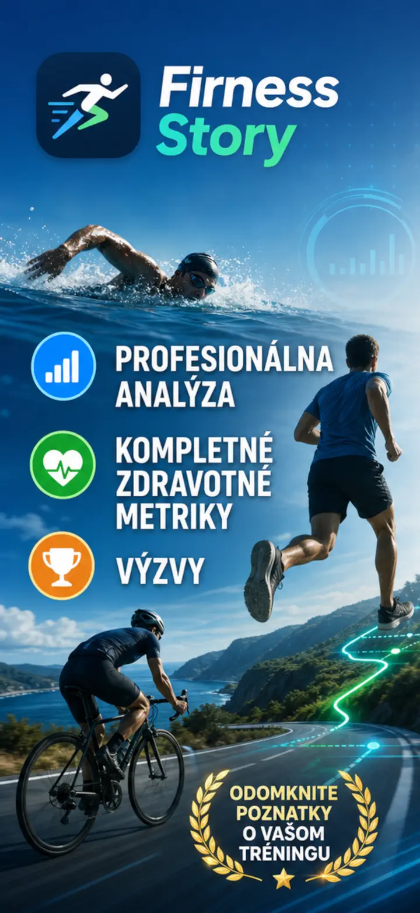
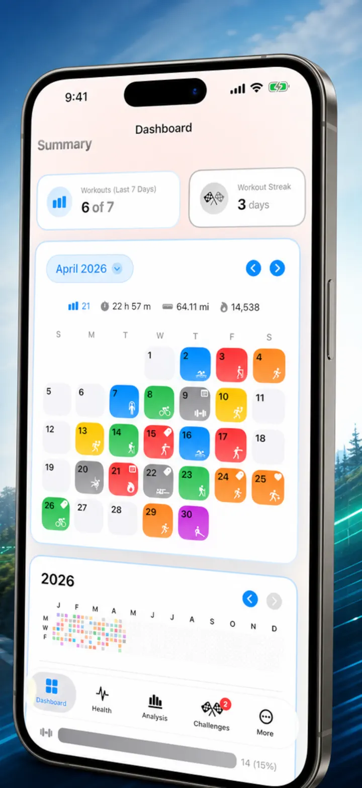
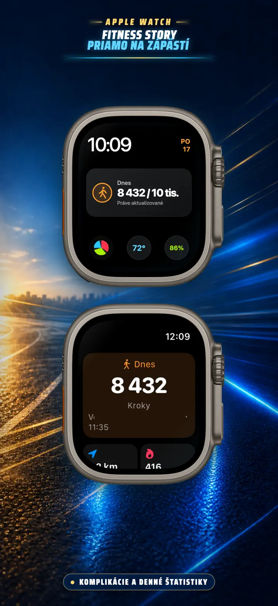

Fitness Story
Tréningové prehľady a výzvy
Novinka na Apple Watch: dnešné kroky na ľubovoľnom ciferníku a obrazovka Dnes so vzdialenosťou, kalóriami a poschodiami — priamo z Apple Zdravie.
Stiahnuť v App Store
O aplikácii
Prestaňte hádať. Začnite vedieť. Fitness Story premieňa vaše dáta z Apple Zdravia na najsilnejšiu a najpodrobnejšiu analýzu na iOS. Žiadne účty. Žiadne servery. Len vaša kompletná fitness cesta, vizualizovaná.
Či už sledujete fázy spánku, analyzujete kadenciu behu alebo bojujete o maratónsky rekord – toto je all-in-one prehľad, ktorý si vaša tvrdá práca zaslúži.
Funguje s akýmkoľvek zariadením alebo aplikáciou, ktorá sa synchronizuje s Apple Zdravím — Apple Watch, Garmin, Polar, Suunto, Zwift a ďalšie.
PROFESIONÁLNA ANALÝZA
- Trendové a referenčné grafy: Krabicové grafy zobrazia medián, kvartily a odľahlé hodnoty pre každý druh športu.
- Podrobné členenie: Filtrujte históriu podľa časti dňa, vzdialenosti, trvania, tempa, prevýšenia, kadencie a dĺžky kroku.
- Rebríčky pre všetko: Jedným ťuknutím porovnáte dnešné metriky (vzdialenosť, tempo, srdcový tep atď.) s celou históriou. Okamžite uvidíte, či ste dosiahli výkon „Top 15 %".
- Graf prispievania: Tepelná mapa v štýle GitHubu pre vašu kompletnú tréningovú históriu. Otočte ju a zobrazte podrobné denné štatistiky.
TRÉNINGOVÉ DETAILY ZNOVU NAVRHNUTÉ
- Inteligentné mapy: Farebne odlíšte vonkajšie trasy podľa rýchlosti, prevýšenia alebo zón srdcového tepu. (Vrátane korekcie mapy Číny).
- Hĺbková analýza úsekov: Pozrite si kilometrové alebo míľové úseky s tempom, prevýšením, srdcovým tepom a kadenciou pre každé kolo.
- Zóny srdcového tepu: Vizualizujte čas v prispôsobených zónach 1–5 podľa veku a pokojovej tepovej frekvencie.
- Bohatý kontext: Pridajte fotky, formátované poznámky, hodnotenie námahy (1–10) a vlastné štítky ku každému tréningu.
KOMPLETNÉ CENTRUM ZDRAVIA
- Všetko, čo vaše Apple Watch merajú, vizualizované na jednom mieste s dennými, týždennými a ročnými trendmi:
- Kardiovaskulárne zdravie: Pokojová srdcová frekvencia, VO2 Max (upravené podľa veku), saturácia kyslíkom a dychová frekvencia.
- Telesné zloženie: Hmotnosť, % telesného tuku, svalová hmota a BMI s indikátormi trendov.
- Aktivita a regenerácia: Kroky (s hodinovým členením), aktívne vs. bazálne kalórie a odchýlky teploty zápästia.
- Pokročilé sledovanie spánku: Hlboká, základná, REM a bdelá fáza vizualizované noc za nocou.
- Korelačné prekrytia: Prekryte viacero zdravotných metrík a zistite, ako spánok ovplyvňuje srdcový tep alebo ako hmotnosť vplýva na VO2 Max.
POROVNAJTE A SÚŤAŽTE
- Porovnanie tréningov: Vyberte si až 10 tréningov pre súbežné porovnanie. Pozrite si percentuálne odchýlky (napr. „+1,5 % rýchlejšie") pre každú metriku po úsekoch!
- Export porovnania: Chcete analyzovať inými nástrojmi? Exportujte porovnanie tréningov!
- Osobné rekordy: Automatické sledovanie pre 1K, 5K, 10K, polmaratón, maratón a vlastné vzdialenosti. Získajte zlaté, strieborné a bronzové trofeje.
- Story časová os: Chronologický prehľad každého míľnika, rekordu a tréningu, ktorý ste kedy dokončili.
VAŠE DÁTA VŠADE
- Globálna mapa: Pozrite si každé miesto, kde ste kedy cvičili, na interaktívnej mape sveta s klastrovaním.
- Výkonný export: Exportujte celú históriu (alebo vlastné rozsahy) do CSV alebo JSON. Zahŕňa kompletné dáta úsekov, telesné metriky a metadáta.
- Synchronizácia cez iCloud: Vaše obľúbené, štítky, poznámky a hodnotenia sa okamžite synchronizujú medzi všetkými zariadeniami.
- Súkromie na prvom mieste: Žiadne skryté servery. Vaše dáta žijú vo vašom zariadení a vo vašom súkromnom iCloude.
- Váš pot rozpráva príbeh. Je čas ho prečítať. Stiahnite si Fitness Story ešte dnes.
Stiahnite si Fitness Story a odomknite svoj potenciál!
Privacy Policy: https://masawata.net/privacy-policy.html Terms Of Service: https://www.apple.com/legal/internet-services/itunes/dev/stdeula/
Snímky obrazovky


Fitness Story
Novinka na Apple Watch: dnešné kroky na ľubovoľnom ciferníku a obrazovka Dnes so vzdialenosťou, kalóriami a poschodiami — priamo z Apple Zdravie.
Stiahnuť v App Store